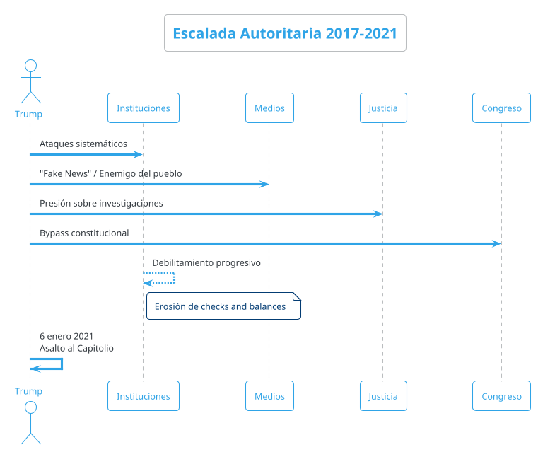
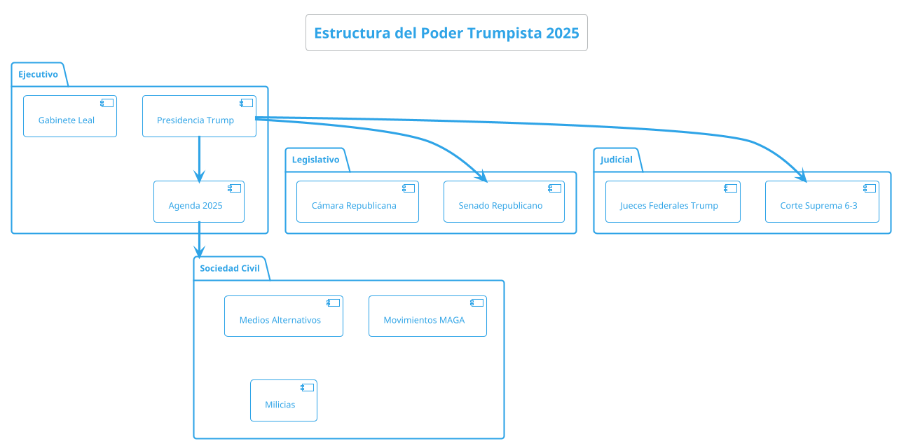
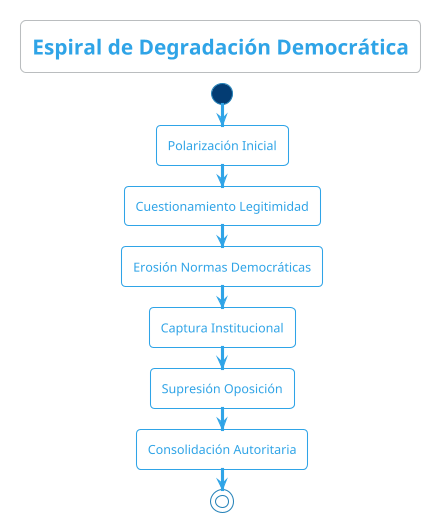
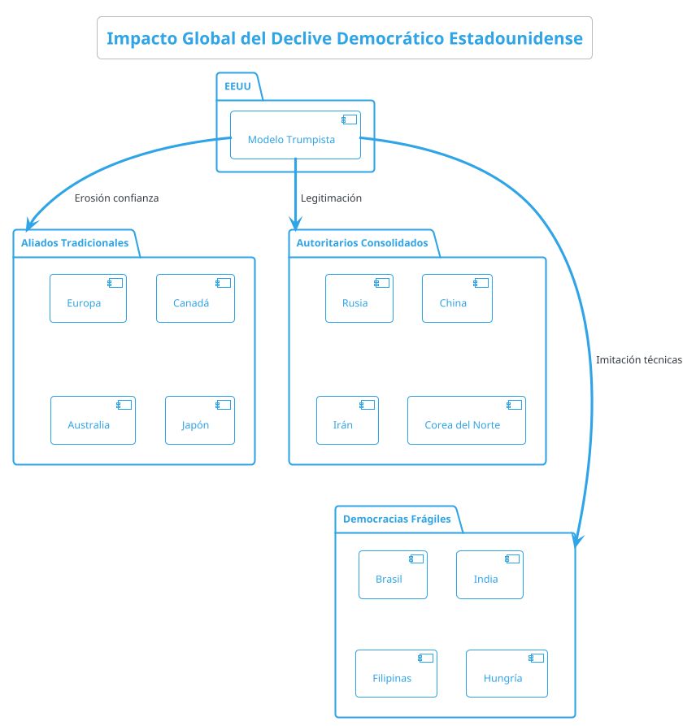
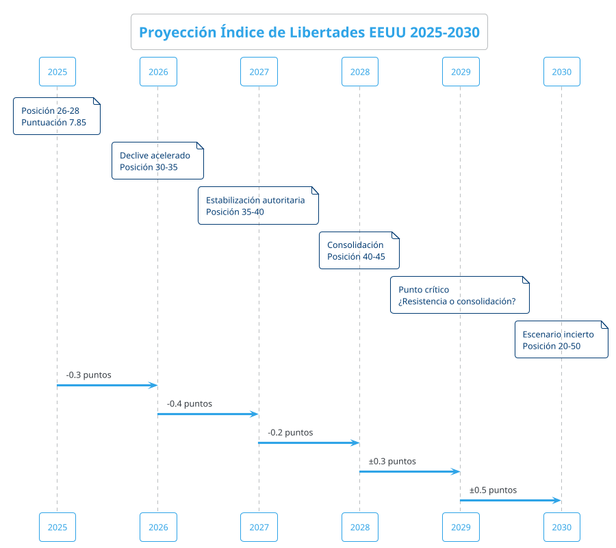

El Declive de las Libertades en la América de Trump: Análisis Geopolítico 2015-2025
El Declive de las Libertades en la América de Trump: Análisis Geopolítico 2015-2025
Estados Unidos experimenta un declive democrático significativo que se ha acelerado durante la presidencia de Donald Trump (2017-2021, 2025-presente). La nación ocupa actualmente el puesto 26-28 en diversos índices democráticos, siendo clasificada como "democracia defectuosa". El deterioro de la libertad humana ha sido de aproximadamente 0.38 puntos desde 2000, con una aceleración notable en la última década.
Contexto Histórico y Metodológico
Definición del Índice de Libertades
Los principales indicadores utilizados para medir el declive incluyen:
- Índice de Democracia del Economist Intelligence Unit
- Freedom in the World de Freedom House
- Índice de Libertad Humana del Cato Institute
- Índice de Libertad Académica
Posición Internacional Actual
| Índice | Ranking EEUU | Puntuación | Clasificación |
|---|---|---|---|
| Democracia EIU | 26-28 | 7.85/10 | Democracia Defect |
| Libertad Académica | 85 | N/D | Declive Signif |
| Freedom House | Variable | 83/100 | Parcial Libre |
| Libertad Humana Cato | 23 | 8.73/10 | Mayormente Libre |
Análisis Temporal del Declive (2015-2025)
Fase I: Erosión Preparatoria (2015-2016)
Durante este período, se observaron las primeras señales de debilitamiento institucional:
- Polarización política extrema
- Cuestionamiento de la legitimidad electoral
- Incremento de la desinformación mediática
- Debilitamiento de las normas democráticas no escritas
Fase II: Aceleración Trumpista (2017-2021)

Durante este período crítico:
- Ataque a instituciones democráticas: Sistemático cuestionamiento del FBI, CIA, y sistema judicial
- Erosión de la libertad de prensa: Designación de medios como "enemigos del pueblo"
- Polarización extrema: División de la sociedad en campos irreconciliables
- Culminación autoritaria: Asalto al Capitolio del 6 de enero de 2021
Fase III: Paréntesis Democrático (2021-2024)
Período de Biden caracterizado por:
- Intentos de restauración institucional
- Persistencia de la polarización
- Continuidad de amenazas estructurales
- Preparación del retorno trumpista
Fase IV: Segundo Mandato Trump (2025-presente)

Factores Estructurales del Declive
Causas Endógenas
- Crisis de representatividad:
- Sistema electoral indirecto
- Gerrymandering sistemático
- Supresión del voto
- Influencia del dinero en política
- Polarización mediática:
- Ecosistemas informativos paralelos
- Desinformación sistemática
- Algoritmos de redes sociales
- Pérdida de verdades compartidas
- Debilidad institucional:
- Dependencia de normas no escritas
- Falta de mecanismos anticorrupción
- Sistema de pesos y contrapesos erosionado
Causas Exógenas
- Interferencia extranjera:
- Operaciones de desinformación rusas
- Ciberataques a infraestructura electoral
- Influencia china en redes sociales
- Crisis económica y social:
- Desigualdad creciente
- Declive de la clase media
- Crisis de opioides
- Cambios demográficos
Mecanismos de Degradación Democrática

Técnicas de Autoritarismo Competitivo
| Mecanismo | Implementación Trump | Impacto |
|---|---|---|
| Captura judicial | Nombramiento jueces conserv | Control a largo plazo |
| Represión selectiva | Persecución de opositores | Disuasión política |
| Control mediático | Deslegitimación prensa libre | Monopolio narrativo |
| Manipulación electrl | Restricciones al voto | Ventaja competitiva |
| Clientelismo | Distribución recursos selectiva | Lealtad territorial |
| Polarización | Retórica divisiva sistemática | Fragmentación social |
Actores y Dinámicas
Ganadores del Sistema Trumpista
| Actor | Beneficios Obtenidos | Mecanismo de Captura |
|---|---|---|
| Élites económ | Reducción impuestos corporat | Lobby directo |
| Base electoral | Validación identitaria | Narrativa victimización |
| Medios conserv | Audiencias cautivas | Modelo negocio consolid |
| Aparato militar | Presupuestos aumentados | Retórica seguridad nac |
| Oligarcas | Desregulación financiera | Captura regulatoria |
Perdedores del Proceso
| Actor | Pérdidas Sufridas | Mecanismo de Exclusión |
|---|---|---|
| Minorías étnicas | Políticas discriminat | Retórica exclusión |
| Institucs democrát | Pérdida credibilidad | Politización extrema |
| Sociedad civil | Espacios participac reduc | Criminalización |
| Prensa libre | Acceso información limit | Hostigamiento sistemát |
| Academia | Libertad investigación | Presión ideológica |
| Trabajadores | Derechos laborales | Desregulación |
Impacto Geopolítico Global
Efecto Dominó Autoritario
La degradación democrática estadounidense ha tenido efectos cascada:

Consecuencias Internacionales
| Esfera | Consecuencia | Actores Beneficiados |
|---|---|---|
| Liderazgo moral | Pérdida credibilidad democrát | China, Rusia |
| Alianzas militares | Debilitamiento NATO | Potencias revisionist |
| Comercio global | Proteccionismo aumentado | Competidores regionales |
| Derechos humanos | Menor presión internacional | Regímenes autoritarios |
| Multilateralismo | Abandono organismos internac | Potencias emergentes |
| Estabilidad regional | Retiro compromisos seguridad | Actores disruptivos |
Escenarios Futuros (2025-2030)
Escenario 1: Consolidación Autoritaria (Probabilidad 40%)
Características:
- Eliminación efectiva de la oposición
- Control total de instituciones
- Represión sistemática de disidencia
- Alineamiento con autocracias globales
Indicadores clave:
- Modificación constitucional
- Eliminación de término presidencial
- Control mediático total
- Paramilitarización del Estado
Escenario 2: Autoritarismo Competitivo Estable (Probabilidad 35%)
Características:
- Mantenimiento de fachada democrática
- Elecciones manipuladas pero regulares
- Oposición debilitada pero existente
- Alternancia controlada
Escenario 3: Resistencia y Recuperación (Probabilidad 25%)
Características:
- Movilización de sociedad civil
- Coalición anti-Trump efectiva
- Reformas institucionales profundas
- Restauración democrática gradual
Proyecciones del Índice de Libertades

Tabla Proyectiva de Rankings
| Año | Escenario Optimista | Escenario Medio | Escenario Pesimista |
|---|---|---|---|
| 2025 | 26 | 28 | 30 |
| 2026 | 24 | 32 | 38 |
| 2027 | 22 | 35 | 42 |
| 2028 | 20 | 38 | 45 |
| 2029 | 18 | 40 | 48 |
| 2030 | 15 | 42 | 50+ |
Indicadores de Seguimiento
| Indicador | Valor 2025 | Meta 2027 | Umbral Crít |
|---|---|---|---|
| Índice Democracia EIU | 7.85 | <7.0 | <6.0 |
| Libertad Prensa (RSF) | Posición 42 | >50 | >60 |
| Polarización Afectiva | 85% | >90% | >95% |
| Confianza Institucional | 32% | <25% | <15% |
| Violencia Política | Incidentes 150 | >300 | >500 |
| Participación Electoral | 66% | <60% | <50% |
Análisis Comparativo Internacional
Paralelos Históricos
| País | Período Declive | Mecanismos Usados | Resultado Final |
|---|---|---|---|
| Hungría | 2010-presente | Captura mediática | Autocracia Competit |
| Polonia | 2015-2023 | Reforma judicial | Recuperación parcial |
| Turquía | 2013-presente | Estado emergencia | Autoritarismo consol |
| Venezuela | 1999-presente | Populismo autor | Autocracia completa |
| India | 2014-presente | Nacionalismo | Democracia iliberl |
| Brasil | 2018-2022 | Polarización | Alternancia democrát |
Recomendaciones Estratégicas
Para la Comunidad Internacional
- Diversificación de alianzas: Reducir dependencia de liderazgo estadounidense
- Fortalecimiento de organismos multilaterales: Compensar ausencia estadounidense
- Apoyo a sociedad civil americana: Financiamiento de organizaciones democráticas
- Preparación para múltiples escenarios: Planes de contingencia geopolítica
Para Actores Domésticos
- Construcción de coaliciones amplias: Unir fuerzas democráticas diversas
- Reforma institucional profunda: Constitucionalizar normas democráticas
- Educación cívica masiva: Reconstruir cultura democrática
- Tecnología para la democracia: Contrarrestar desinformación
Medidas de Contención Inmediata
| Ámbito | Medida Propuesta | Actor Responsable |
|---|---|---|
| Legal | Litigation estratégica | ONGs derechos civiles |
| Electoral | Protección derecho voto | Secretarios de Estado |
| Mediático | Fact-checking masivo | Medios independientes |
| Civil | Desobediencia no violent | Movimientos sociales |
| Internacional | Presión diplomática | Democracias aliadas |
| Tecnológico | Plataformas alt inform | Sector tech privado |
Conclusiones
El declive democrático estadounidense representa una crisis sistémica con implicaciones globales profundas. La tendencia global muestra que la democracia ha alcanzado mínimos históricos, y Estados Unidos forma parte de esta regresión autoritaria mundial.
La confirmación del descenso aproximado del 6.8% en índices de libertad durante la última década, situando a EEUU en posiciones entre 26-28 globalmente, refleja una transformación estructural que trasciende personalidades políticas individuales.
El período 2025-2030 será definitorio para determinar si Estados Unidos puede revertir esta tendencia o si consolidará un modelo de autoritarismo competitivo que redefina el orden geopolítico global. La respuesta a esta crisis determinará no solo el futuro de la democracia americana, sino el equilibrio de poder mundial en las próximas décadas.
Las implicaciones para la geoestrategia internacional son profundas: el declive del faro democrático occidental acelera la transición hacia un mundo multipolar donde las autocracias ganan legitimidad y espacio de maniobra, mientras las democracias deben adaptarse a un contexto de menor liderazgo estadounidense en la promoción de valores liberales.
Síntesis de Hallazgos Clave
- Estados Unidos ha experimentado un declive democrático sostenido desde 2015
- La posición internacional ha caído del top 20 al rango 26-28 en índices principales
- El modelo trumpista representa autoritarismo competitivo, no autocracia plena
- Los efectos geopolíticos trascienden las fronteras estadounidenses
- La recuperación democrática es posible pero requiere reformas estructurales profundas
Referencias Documentales
- Economist Intelligence Unit. (2025). "Democracy Index 2024: Global Democracy in Decline". London: EIU.
- Freedom House. (2025). "Freedom in the World 2025: United States Country Report". Washington D.C.: Freedom House.
- Cato Institute. (2023). "Human Freedom Index 2023: Global Rankings and Trends". Washington D.C.: Cato Institute.
- Varieties of Democracy Project. (2025). "Academic Freedom Index 2025". Gothenburg: V-Dem Institute.
- Levitsky, Steven & Ziblatt, Daniel. (2018). "How Democracies Die". New York: Crown Publishing.
- Snyder, Timothy. (2017). "On Tyranny: Twenty Lessons from the Twentieth Century". New York: Tim Duggan Books.
- Protect Democracy. (2025). "Threat Index: American Democracy Under Pressure". Washington D.C.: Protect Democracy.
- Repucci, Sarah & Slipowitz, Amy. (2025). "Freedom in the World 2025: The Erosion of Rights and Freedoms Reaches a Tipping Point". Freedom House.
- Mechkova, Valeriya et al. (2024). "How Much Democratic Backsliding Is Too Much? A Global Perspective". Journal of Democracy, 35(4): 131-145.
- Diamond, Larry. (2024). "Democratic Regression in the United States: What We Know and What We Need to Learn". American Political Science Review, 118(2): 567-581.
- Haggard, Stephan & Kaufman, Robert. (2024). "Backsliding: Democratic Regress in the Contemporary World". Cambridge: Cambridge University Press.
- Norris, Pippa. (2024). "Authoritarian Populism and Electoral Integrity". Electoral Studies, 72: 102-115.
- El Compromiso del 2% del PIB en Defensa OTAN: Entre la Geopolítica y los Intereses Económicos
- Análisis de Libertades Globales: Evolución del Índice de Libertades 2015-2025 June